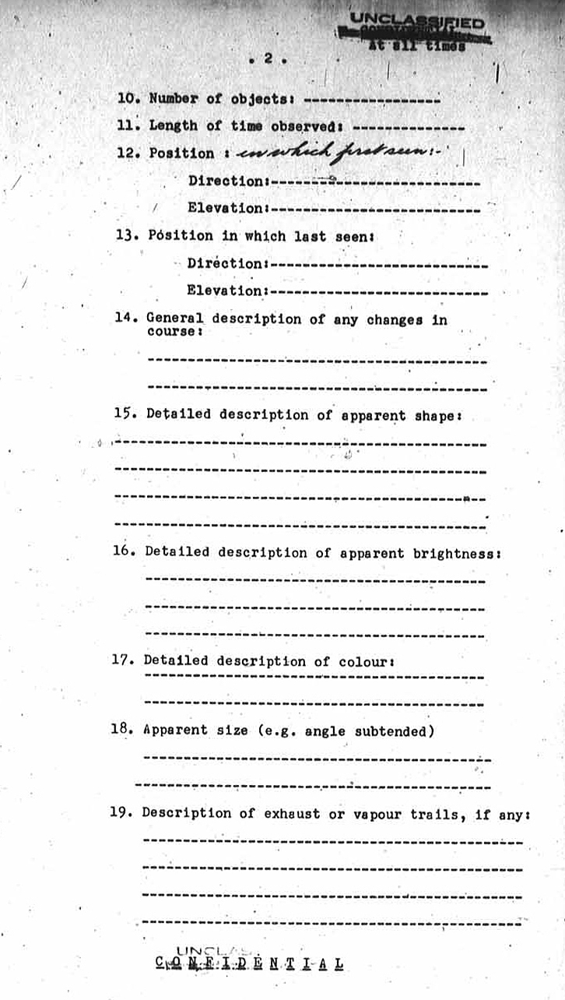

(A separate form is to be used for each observer.)
Details of Observer
Name of observer: Surname:-----------------Initials----
Address of observer: Street-----------------City-------- Province--------------------
Occupation and previous relevant experience:
Age: -----------
Has observer seen "flying objects" before, and if so, briefly, when, where, and circumstances:
--------------------------------- --------------------------------- ---------------------------------
Was observer wearing glasses? ---------------------------------
Details of Observation:
Date and local time: ----------------------------------
Position of observer (as accurately as possible) --------------------------------
-------------------------------- --------------------------------
General description of sighting: --------------------------------- ---------------------------------
--------------------------------- ---------------------------------
Page 2 du document d'origine

Number of objects: ----------------
Length of time observed: --------------
Position : in which first seen: Direction:----------------------
Elevation:----------------------
Position in which last seen: Direction:---------------------- Elevation:----------------------
General description of any changes in course: ----------------------------------
----------------------------------
Detailed description of apparent shape: ----------------------------------
---------------------------------- ----------------------------------
----------------------------------
Detailed description of apparent brightness: ----------------------------------
---------------------------------- ----------------------------------
Detailed description of colour: ----------------------------------
----------------------------------
Description of exhaust of vapour trails, if any: -----------------------------------
----------------------------------- -----------------------------------
-----------------------------------
Page 3 du document d'origine
Description of noise, if any: ----------------------------------- -----------------------------------
Weather conditions:
Clouds:
Visibility
Precipitation
General remarks: -------------------------------
Was the object flying above, below or in and out of cloud? -----------------------------------
Did anyone else see the object? If so names, and addresses: -----------------------------------
----------------------------------- -----------------------------------
----------------------------------- -----------------------------------
Is there other contributory evidence: (Photographic, or electronic--etc)
----------------------------------- -----------------------------------
-----------------------------------
Any other details: (including sketch if possible) -----------------------------------
----------------------------------- -----------------------------------
----------------------------------- -----------------------------------
----------------------------------- -----------------------------------
----------------------------------- -----------------------------------
-----------------------------------
Page 4 du document d'origine
Details of interrogator
Interrogator: Surname: ----------------Initials----- Position held:--------------------
Date and place of Interrogation: -----------------------------------
-----------------------------------
Interrogator's opinion of the reliability of the observer. -----------------------------------
----------------------------------- -----------------------------------
----------------------------------- -----------------------------------
----------------------------------- -----------------------------------
-----------------------------------